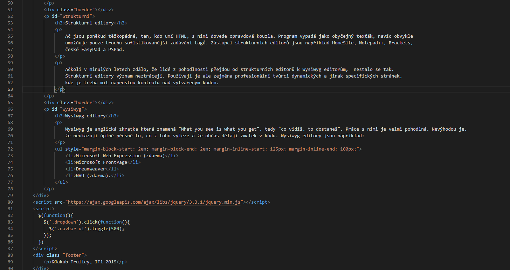

Strukturní, nebo wysiwyg? - Strukturní editory - Wysiwyg editory
Editor je pojem pro program, kterým se dá něco upravovat, nejčastěji text (angl. to edit=upravovat).
Ač jsou poněkud těžkopádné, ten, kdo umí HTML, s nimi dovede opravdová kouzla. Program vypadá jako obyčejný texťák, navíc obvykle umožňuje pouze trochu sofistikovanější zadávání tagů. Zástupci strukturních editorů jsou například HomeSite, Notepad++, Brackets, české EasyPad a PSPad.
Ačkoli v minulých letech zdálo, že lidé z pohodlnosti přejdou od strukturních editorů k wysiwyg editorům, nestalo se tak. Strukturní editory význam neztrácejí. Používají je ale zejména profesionální tvůrci dynamických a jinak specifických stránek, kde je třeba mít naprostou kontrolu nad vytvářeným kódem.

Wysiwyg je anglická zkratka která znamená "What you see is what you get", tedy "co vidíš, to dostaneš". Práce s nimi je velmi pohodlná. Nevýhodou je, že neukazují úplně přesně to, co z toho vyleze a že občas dělají zmatek v kódu. Wysiwyg editory jsou například: